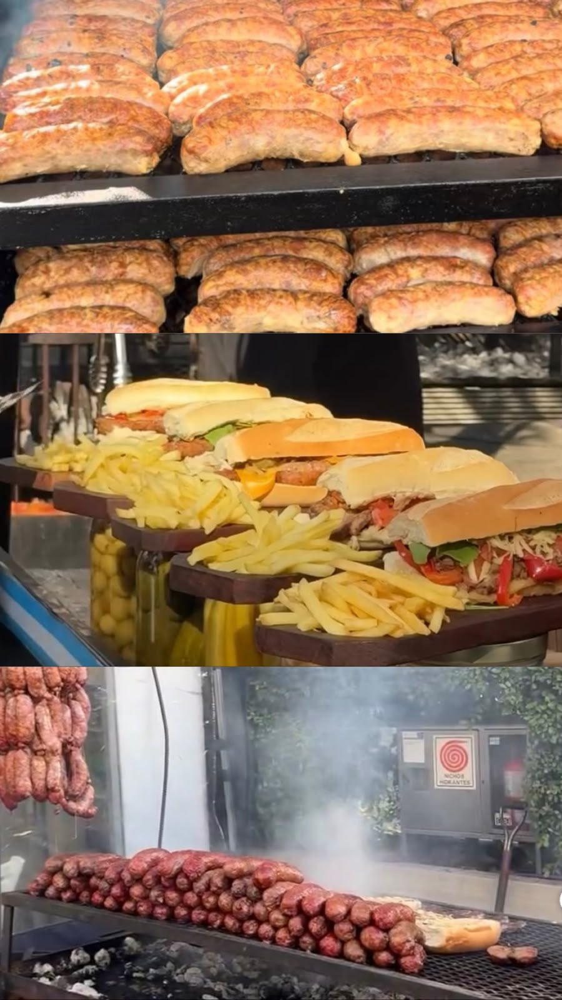
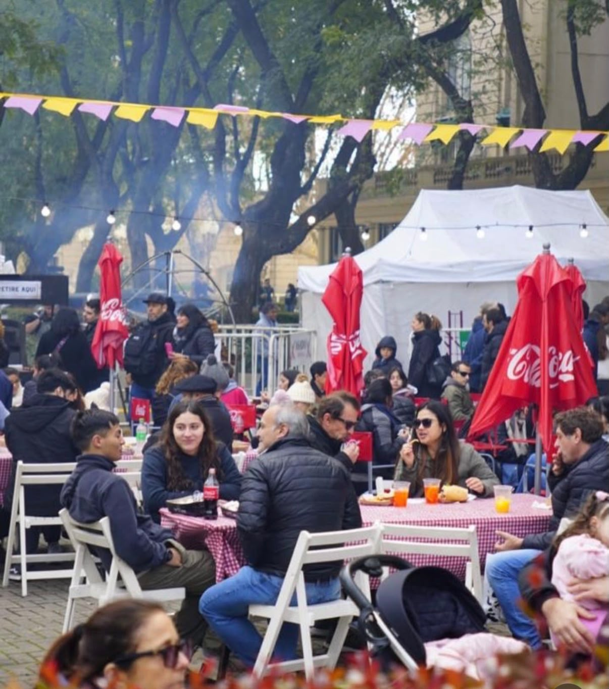
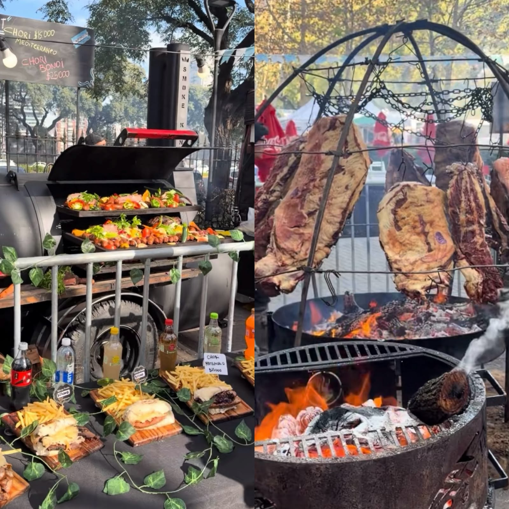

El choripán volvió a tener su gran celebración en la Ciudad de Buenos Aires. Durante el sábado 27 y domingo 28 de junio, el Hipódromo Argentino de Palermo recibió la 11° edición de Chori Fest, el festival gastronómico que rinde homenaje a uno de los íconos más representativos de la cocina argentina.
Con entrada libre y gratuita, el evento se desarrolló entre las 12 y las 20 horas y reunió a miles de visitantes que recorrieron los más de 35 puestos y food trucks instalados en el predio para disfrutar de versiones tradicionales y de autor del clásico sándwich argentino.
Más de cien versiones del sándwich más argentino

Uno de los principales atractivos de esta edición fue la enorme variedad de propuestas gastronómicas. Chori Fest ofreció alrededor de un centenar de versiones del choripán, desde las recetas clásicas hasta combinaciones gourmet inspiradas en distintas ciudades y sabores del mundo. La propuesta apostó por una mezcla de influencias francesas, italianas y criollas, logrando reinterpretaciones originales del tradicional chorizo argentino.
Entre las opciones más destacadas se encontraron:
La oferta estuvo pensada tanto para los amantes del choripán tradicional como para quienes buscan sabores más innovadores y propuestas gourmet.
Precios accesibles y relación calidad-precio destacada

Los precios de los choripanes comenzaron desde los $10.000, aunque algunas propuestas especiales partían desde los $8.000 dependiendo del puesto y la preparación elegida. Además del tradicional sándwich, los visitantes pudieron encontrar tapas de asado por $17.000 y bondiola con distintos toppings por $15.000.
Muchos asistentes destacaron la calidad de los productos y la relación entre precio y porción, señalando que la propuesta gastronómica superó las expectativas tanto por el sabor como por la variedad disponible. La gran convocatoria durante ambas jornadas volvió a confirmar el crecimiento del festival dentro del calendario gastronómico porteño.
Mucho más que choripanes

Aunque el protagonista indiscutido fue el choripán, Chori Fest ofreció una experiencia gastronómica mucho más amplia. Los asistentes también pudieron disfrutar de:
La propuesta se completó con vinos de bodegas seleccionadas, cerveza artesanal y opciones de coctelería para acompañar cada plato.
Más de 35 puestos y food trucks participaron del festival
La edición 2026 reunió a algunas de las parrillas y emprendimientos gastronómicos más reconocidos de Buenos Aires, junto con nuevos proyectos especializados en cocina al fuego.
Los recomendados de Chori Fest
Entre las propuestas más destacadas por el público se encontraron:
Chorizo a la pomarola con cebolla, morrón y salsa de tomate.
$8.000Chorizo 100% de cerdo ahumado a leña, servido en pan artesanal.
$9.000Dos opciones que reflejan el espíritu del festival: reinventar el clásico choripán sin perder su identidad.
Con entrada gratuita, cientos de opciones para elegir y una convocatoria que crece edición tras edición, Chori Fest volvió a consolidarse como uno de los eventos gastronómicos más importantes de Buenos Aires. La combinación entre tradición, innovación y cocina al fuego convirtió nuevamente al Hipódromo de Palermo en el punto de encuentro para los fanáticos del choripán y de la gastronomía argentina.